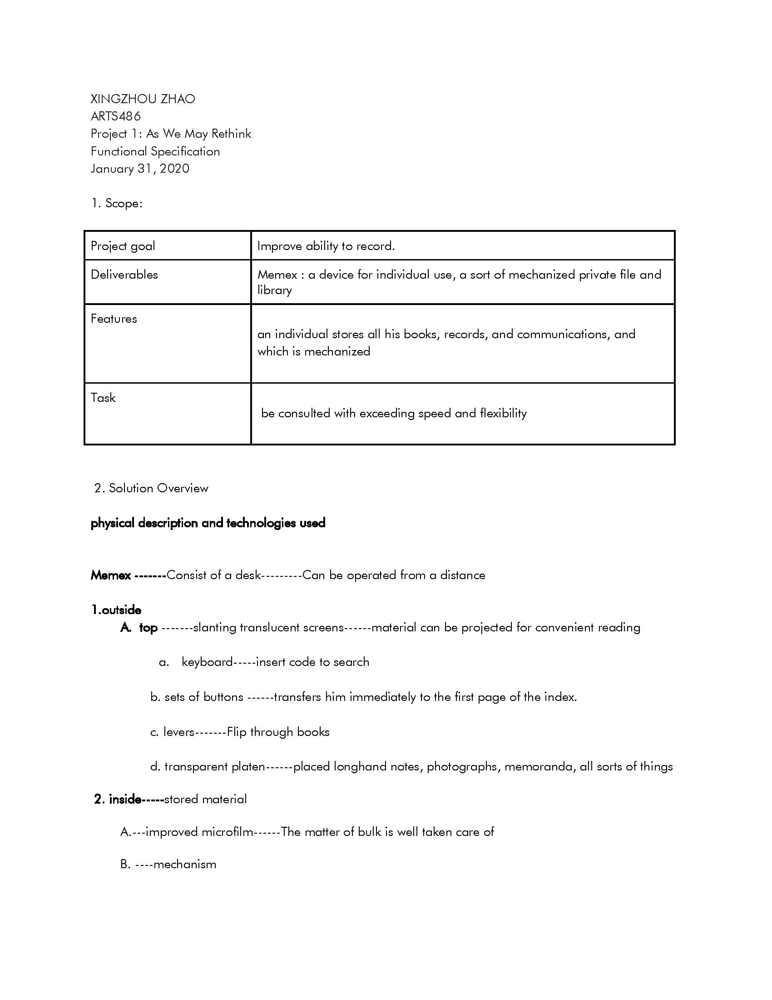
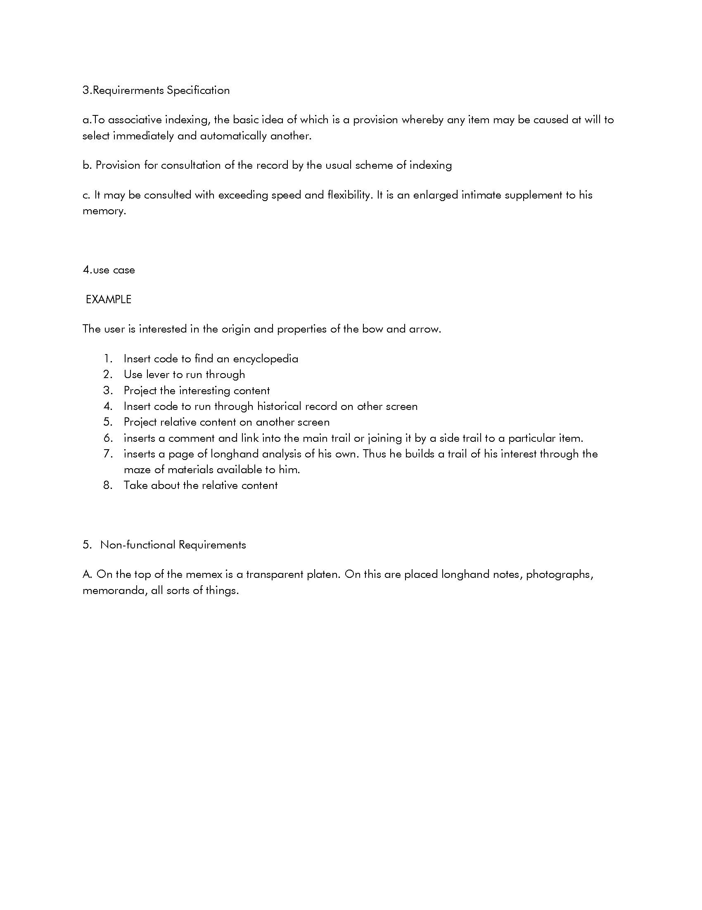
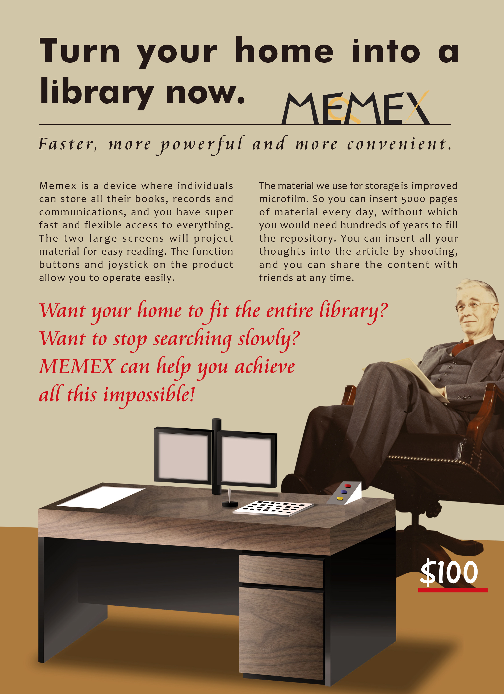
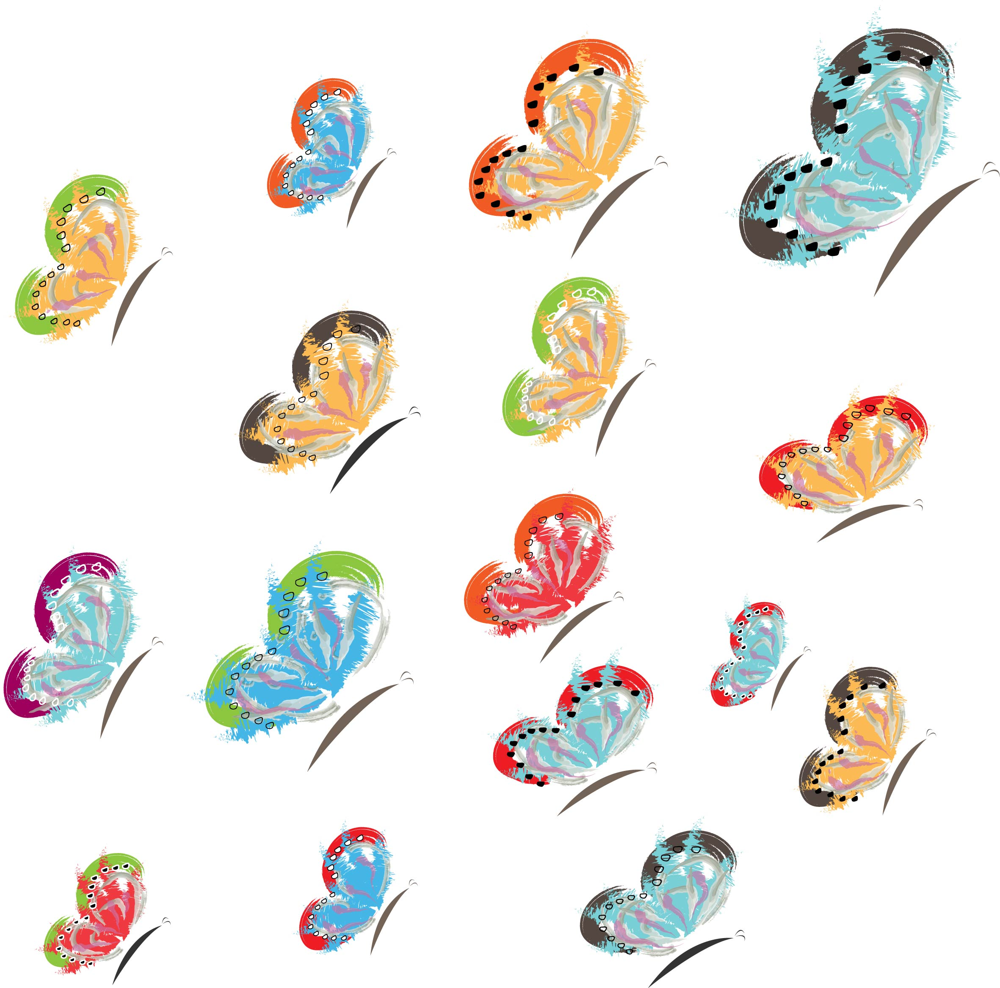

ARTS 486
Sp.Studio Proj:Computr Graphics

Xingzhou Zhao
Hi everyone, let's develop our creativity
Project 1: function specification & flow diagram


I design the flow diagram according the outside function and inside function of the MEMEX.I put functional name into exclamation to emphasize the funtion of MEMEX.There are some detail design,for example,i design the code step inside the line since code is invisible to our eyes and it will show the feeling that code is transfer.I also connect 'turn of' icon with the exclamation point.
The main idea of logo is 'FAST',Since the MEMEX can search and store pretty quickly, which is the most important feature of MEMEX. Therefore, i make the each angel of the part of words upper.
Flow Diagram pdf>Project 1: Device Sketch & Illustration
The illustration was created by Photoshop, I try to make the decive more real. So I use the gradient tool to make the reflect effect of the surface of MEMEX.

Project 1: Magazine AD Device

The design style idea come from the mid 20th century typical AD style. They have many work use the people connect to product. So i add the inventor of MEMEX into the AD(he put the feet on the side of table). Then i adjust the color of whole images close to brow-yellow( old feeling).

Project 2: Transcoding Data


questionaire for project 2 about dream

Project 1: Ipsum Lorem

Each parts of butterfly represent each answers of questions.
Project 1: Ipsum Lorem

The subject of my investigation is people's childhood dreams, to investigate whether they remember and successfully realized their dreams. Butterflies have always been one of the most representative creatures of "Dream". Therefore, my design revolves around the butterfly and each part of the butterfly is made using calligraphy, oil painting and other forms to achieve an abstract feeling, because most of our objects in the brain are abstract.